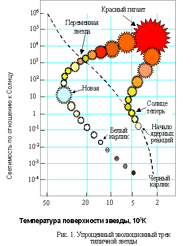
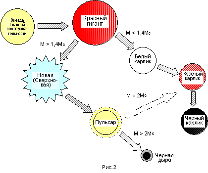
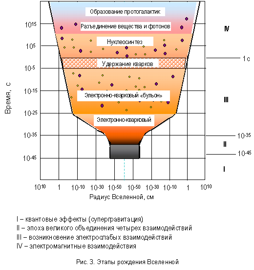

|
1. Эволюция
звезд |
Известно, что самым распространенным элементом во Вселенной является водород. Второй по распространенности элемент – гелий (по числу атомов – 10% от распространенности водорода, по массе – до 30%). Однако лишь малая часть водорода и гелия содержится в звездах – основное их количество распределено в межзвездном и межгалактическом пространстве. Водород и гелий в межзвездном пространстве находятся, в основном, в атомарном состоянии и служат «исходным сырьем» для образования звезд.
Распределение газа в межзвездном пространстве неоднородно. Средняя плотность вещества в нашей Галактике – примерно 1 атом на 1 см3, но в отдельных областях эта плотность выше, т.е. наблюдаются флуктуации плотности, которые обусловлены хаотическим движением атомов в пространстве. Таким образом, плотность вещества в определенной области может существенно превысить среднюю. Если при этом количество вещества в данной области превосходит определенное критическое значение (приблизительно 1000 солнечных масс), то в этой области возникают сильные гравитационные поля, препятствующие разлету газо-пылевого облака – так называемой глобулы, стремящиеся сжать его до возможно меньших размеров, заставляя вещество падать к её центру облака. Падая, частицы вещества приобретают кинетическую энергию и разогревают газово-пылевое облако. Имеются многочисленные данные, подтверждающие предположение, что звезды образуются при конденсации облаков межзвездной пыли и газа.

Падение вещества к центру сопровождается весьма частыми столкновениями частиц и переходом их кинетической энергии в тепловую. В результате температура глобулы возрастает. Глобула становится зародышем будущей звезды - протозвездой и начинает светиться, так как энергия движения частиц переходит в тепло. В этой стадии протозвезда едва видна, так, как основная доля её излучения приходится на далёкую инфракрасную область. Дальнейшее сжатие протозвезды приводит к такому повышению температуры и давления, что становятся возможными термоядерные реакции синтеза гелия из водорода. Протозвезда «разгорается», становится настоящей звездой и «занимает свое место» на Главной последовательности диаграммы Герцшпрунга-Рессела. При этом силы тяготения, стремящиеся сжать вещество звезды, уравновешиваются силами внутреннего давления. Важную роль здесь играет масса звезды. Если масса звезды велика, последняя при рождении попадает на верхнюю часть главной последовательности, диаграммы Герцшпрунга-Рессела, а если масса мала, то звезда оказывается в нижней её части.
Не так давно астрономы считали, что на образование звезды из межзвёздных газа и пыли требуются миллионы лет. Но в последние годы были получены поразительные фотографии области неба, входящей в состав Большой Туманности Ориона, где в течение нескольких лет появилось небольшое скопление звёзд. На снимках 1947г. в этом месте была видна группа из трёх звездоподобных объектов. К 1954г. некоторые из них стали продолговатыми, а к 1959г. эти продолговатые образования распались на отдельные звёзды. Таким образом, впервые в истории человечества люди наблюдали, рождение звёзд буквально на глазах.
Типичная звезда (подобная Солнцу) большую часть свой жизни медленно «перемещаясь» вдоль Главной последовательности, сжигая свой водород в термоядерной топке. Солнце, например, движется так уже 4,5 миллиарда лет, и будет оставаться на Главной последовательности еще примерно 5 миллиардов лет. Более массивные звезды эволюционируют намного быстрее.
Когда водород в центре звезды исчерпан, она сжимается, что приводит к увеличению температуры и началу другой термоядерной реакции – превращению гелия в углерод. При этом выделяется огромное количество энергии, и светимость звезды возрастает. Выделение энергии приводит к увеличению радиационного давления и, как следствие, к расширению внешних слоев звезды. В результате расширения вещество внешних слоев охлаждается, и излучение звезды становится все более красным, так что звезда резко смещается от главной последовательности. Расширение продолжается до тех пор, пока диаметр звезды не возрастет в 200-300 раз. Звезда при этом превращается в красного гиганта. Через пять с лишним миллиардов лет такая судьба ожидает Солнце. Вначале, все сильнее и сильнее разогреваясь, оно сожжет Землю, а затем, расширяясь, поглотит то, что от нее останется. Упрощенная диаграмма эволюции типичной звезды (эволюционный трек) приведен на рисунке 1.

По достижении стадии красного гиганта звезда эволюционирует дальше, и ее положение на диаграмме Герцшпрунга- Рессела сдвигается влево. Примерно через 1% времени жизни звезды она пересекает Главную последовательность. Солнце, например, совершит этот путь приблизительно за 100 млн. лет. В этот период у большинства звезд нарушается динамическое равновесие, и они начинают пульсировать. Это – так называемые цефеиды.После стадии красного гиганта судьба звезды в значительной степени определяется ее массой М (см. схему на рисунке 2). Звёзды с массой меньшей, чем у Солнца, очень экономно тратят запасы своего ядерного "топлива" и могут светить десятки миллиардов лет. Внешние слои звёзд, подобных нашему Солнцу, с массами не большими 1,4 масс Солнца, постепенно расширяются и, в конце концов, совсем покидают ядро звезды. На месте гиганта остаётся маленький и горячий белый карлик. По образному выражению …белый карлик «вызревает» внутри красного гиганта. После того, как последние запасы белого карлика будут израсходованы, он быстро охлаждается, становясь красным, а затем черным карликом.
Новые и сверхновые звезды. Когда в звезде с М < 1,4 МС израсходуются остатки ядерного горючего она так же, как и «легкая» звезда начинает двигаться вниз на H-R диаграмме. При этом выделение энергии и светимость звезды уменьшаются, однако, прежде чем произойдет значительное охлаждение звезды, она может пройти стадию неустойчивости, на протяжении которой происходят извержения вещества звезды в пространство. При каждом таком извержении происходит резкое увеличение светимости. Такие звезды называются новыми. Наиболее мощные взрывы называются Сверхновыми звездами. В нашей галактике вспышки Сверхновых были зафиксированы в 1054, 1572, 1604 годах. Кроме этого, обнаружено около 10 туманностей – остатков от вспышек Сверхновых, наиболее известной из которых является Крабовидная туманность в созвездии Тельца. В телескопы наблюдались многочисленные сверхновые в других галактиках.
Нейтронные звезды. После взрыва сверхновой ее оболочка сбрасывается, и, распространяясь в разные стороны, образует туманность, в центре которой образуется весьма плотная нейтронная звезда. Вещество такой звезды состоит, в основном, из нейтронов. Эта «нейтронизация» вещества происходит за счет гравитационного коллапса, т.е. сверхмощного сжатия звезды. Нейтронные звезды пульсируют с малым периодом (около 0.001с), однако существуют нейтронные звезды с периодом пульсации порядка 1,4с. Они называются пульсарами. Типичным примером пульсара является нейтронная звезда в Крабовидной Туманности.
Черные дыры. При массах звезд от 2 до 10 МС весьма возможна ситуация, когда после вспышки Сверхновой давление нейтронов уже не может предотвратить гравитационный коллапс. И когда скорость падения в поле тяжести такой звезды становится равной скорости света, гравитационный коллапс неизбежен, и звезда продолжает сжиматься до бесконечности (теоретически – до точечного размера). Для такой звезды существует понятие «гравитационного радиуса» rg, соответствующему критическому размеру звезды. Сфера соответствующего радиуса называется сферой Шварцшильда (в честь немецкого ученого К. Шварцшильда). С точки зрения классической механики гравитационный радиус – это радиус такого тела, из поля тяжести которого не может вырваться свет [1]. Таким образом, когда звезда, сжимаясь достигает критического размера, она перестает излучать, сохраняя способность притягивать («засасывать») все, что оказывается в поле ее тяготения. За это она и получила название «черная дыра».
Впервые существование во Вселенной объектов, обладающих таким полем тяготения, что ничто материальное не может вырваться из их плена, было предсказано еще в 1796 г. Лапласом. Однако вывод о существование черных дыр следует из ОТО (отсюда второе название черных дыр – отоны). Интересно, что сам Альберт Эйнштейн, создавший общую теорию относительности и гравитации, в 1939 году опубликовал статью, где доказывал невозможность их существования. Через несколько месяцев после публикации Эйнштейна появилась статья Роберта Оппенгеймера и его студента Снайдера, в которой на основе теории Эйнштейна было показано, как могут возникать черные дыры.
В настоящее время теория черных дыр разработана в настоящее время достаточно подробно, однако базируется она на совсем ином фундаменте — квантово-статистической механике. Без эффектов, предсказанных именно квантовой статистикой, каждый астрономический объект мог бы случайно «свалиться» в черную дыру и мир был бы совсем не таким, каков он на самом деле.
Можно ли обнаружить черные дыры – ведь они не испускают никакого излучения?. Оказывается можно – косвенным путем. Выше уже говорилось о кратных звездных системах (двойных, тройных звездах). Если одним из компонентов тесной звездной системы является черная дыра, невидимая, но обладающая массой, она будет засасывать вещество звезды-спутника, действуя как «прожорливый вампир». Газовый диск вокруг черной дыры разогревается до десятков миллионов градусов Кельвина и становится исключительно мощным источником рентгеновского излучения. Это излучение и можно обнаружить, и оно действительно обнаруживается. Сейчас «подозреваемыми» на черные дыры являются объекты в созвездиях Лебедь, Стрелец, Скорпион и др. Общее же количество черных дыр во Вселенной должно быть очень большим (в одной нашей Галактике их может быть сотни миллионов).
2. Возникновение Вселенной. Теория Большого Взрыва
Проблема эволюции Вселенной является центральной в естествознании. Вопросы о том, как велик окружающий нас звездный мир и когда он возник или был создан, интересуют людей с незапамятных времен. В различных мифах, натурфилософских представлениях до нас дошли идеи о бесконечном пространстве и времени. Действительно, утверждения о том, что мир возник из какого-то первичного хаоса или был сотворен в некоторый момент времени, неявно предполагают, что Хаос и Творец существовали еще «до того», а за границами мира, как бы далеко они ни располагались, всегда есть что-то еще, по крайней мере пустота. Принципиально иная концепция возникла в 20-х годах 20-го века. Основываясь на созданной незадолго до того общей теории относительности, ленинградский физик А.А. Фридман пришел к выводу, что в силу каких-то пока не ясных причин Вселенная внезапно возникла в очень малом, практически точечном объеме чудовищной плотности и температуры (так называемой сингулярности) и стала стремительно расширяться. Размеры «зародыша» Вселенной сопоставляют с размерами атомного ядра, т.е. 10-15 м. Ученик Фридмана Дж. Гамов рассчитал в конце сороковых годов модель горячей взрывающейся Вселенной, положив начало так называемой теории "Большого взрыва". Широкое распространение и внедрение эта теория получила с середины 1960-х годов.
Спрашивать о том, что было до «Большого Взрыва» и что находится за пределами стремительно расширяющегося мира, бессмысленно. Вселенная, согласно теории Большого Взрыва ограничена в пространстве и времени, по крайней мере, со стороны прошлого. Такая трудно совместимая с нашей интуитивной логикой картина следовала из полученных Фридманом формул. Вскоре, однако, астрономические наблюдения вскоре подтвердили факт расширения окружающего нас пространства: американский астроном Э. Хаббл измерил его скорость. Экстраполируя обратно к исходному нулевому объему, можно было оценить время жизни Вселенной — что-то около 15 — 20 миллиардов лет. До самого взрыва не существовало ни вещества, ни времени, ни пространства. События в первую секунду протекали стремительно. Вначале образовалось излучение (фотоны), затем частицы вещества - кварки и антикварки. В течение той же секунды из кварков и антикварков образовались протоны, антипротоны и нейтроны. Как известно, антипротон отличается от протона противоположным зарядом, а в остальном эти частицы являются почти тождественными. При столкновении протона и антипротона происходит реакция аннигиляции, в ходе которых обе частицы исчезают, превращаясь в излучение (фотоны). Также возможны ядерные реакции обратные реакции аннигиляции, когда из фотонов образуется пара протон-антипротон. Сказанное о протоне и антипротоне верно также и для любой другой пары частицы и соответствующей античастицы.
После образования протонов, антипротонов и нейтронов стали частыми реакции аннигиляции, так как вещество новорожденной Вселенной было очень плотно, частицы постоянно между собою сталкивались. Во Вселенной преобладало излучение.
К исходу первой секунды, когда температура Вселенной упала до 10 млрд. градусов, образовались и некоторые другие элементарные частицы, в том числе электрон и парная ему античастица - позитрон. К тому же временному рубежу большая часть частиц аннигилировала. Так вышло, что частиц вещества было на ничтожную долю процента больше, чем частиц антивещества. Этот факт до сих пор нуждается в объяснении. Но, так или иначе, наша Вселенная состоит из вещества, а не из антивещества.
К третьей минуте из четверти всех протонов и нейтронов образовались ядра гелия. Через несколько сот тысяч лет расширяющаяся Вселенная остыла настолько, что ядра гелия и протоны смогли удерживать возле себя электроны. Так образовались атомы гелия и водорода. Вселенная стала намного «просторнее». Излучение, не сдерживаемое больше свободными электронами, смогло распространяться на значительные расстояния. Мы до сих пор можем на Земле "слышать" отголоски того излучения, предсказанного Г. Гамовым. Оно равномерно приходит со всех сторон и, значительно "остыв" за 15 миллиардов лет с момента Взрыва, соответствует излучению тела, нагретого всего до 3 К. Это излучение принято называть реликтовым. Его обнаружение и существование подтверждают теорию Большого взрыва. Излучение является микроволновым.
При расширении, в общем, однородной Вселенной в тех или иных ее местах образовывались случайные сгущения. Но именно эти "случайности" стали зачатками больших уплотнений и центрами концентрации вещества. Так во Вселенной образовались области, где вещество собиралось, и области, где его почти не было. Под воздействием гравитации появившиеся уплотнения росли. В местах таких уплотнений стали образовываться галактики, скопления и сверхскопления галактик.
Близка к теории Большого Взрыва, или «горячей Вселенной» и модель «раздувающейся Вселенной», отличающаяся описанием процессов в течение первых микроскопических долей секунды (10-30 c) после начала расширения (см рис. 3).
Дополненная теорией ядерных реакций в остывающем по мере своего расширения правеществе теория Большого Взрыва позволила рассчитать относительные концентрации (распространенность) водорода, дейтерия и более тяжелых химических элементов в природе, что также оказалось в согласии с результатами наблюдений.
В последнюю четверть двадцатого века теория Большого Взрыва стала практически общепринятой в космологии.

3. Антропный принцип.
Место человека во Вселенной в науке 20 в. часто рассматривается на основе антропного принципа (от греч. antropos - человек), который утверждает, что существование и развитие человека обусловлено закономерностями Вселенной, что он занимает во Вселенной привилегированное положение, т.е. Вселенная – дом человека. Истоки этого принципа связывают с идеями К.Э. Циолковского. По его мнению, материя породила человека в ходе эволюции, чтобы двигаться к высшему уровню своего развития и при помощи человека познать себя. Согласно Циолковскому, социально организованное человечество, накопив большой запас знаний, вступит в космическую эру. Циолковский выделяет в ней четыре эпохи. В результате развития по повторяющимся космическим циклам, человек достигнет высочайшего уровня (абсолютного знания), а космос будет представлять собой великое совершенство.
Идея о сверхразуме развивалась французским палеонтологом и философом П. Тейяром де Шарденом в его книге «Феномен человека». Он также исходил из принципа антропоцентризма (человек – центр мира) и писал о «концентрации сознания» отдельных индивидов в коллективный разум – точку Омега. Он считал, что человек, как ось и вершина эволюции раскрывает все, что заложено в материи, он «микрокосм», содержащий в себе все возможности космоса. Жизнь и человек неразрывно связаны с космическими процессами. Неживая материя только кажется на «мертвой», но, по Шардену, она лишь «дожизненна», в ней имеются потенции стать живой.
Само понятие «антропный принцип» появилось уже во второй половине 20-го века. По современным представлениям этот принцип вытекает из взаимосвязи мировых констант (скорость света, гравитационная постоянная, постоянная Планка, масса электрона и др.). Он был сформулирован в 1961 г. Антропный принцип утверждает, что мир таков, каков он есть, потому что в противном случае некому было бы спрашивать, почему он таков.
Действительно, свойства окружающего нас мира явились результатом определенной согласованности соответствующих фундаментальных констант, и надо отметить, что интервал возможных значений этих фундаментальных констант, обеспечивающих нам мир, пригодный для жизни, очень мал.
Так, например, ослабление на несколько порядков константы сильных взаимодействий привело бы к тому, что на ранних стадиях расширения Вселенной образовывались, в основном, только тяжелые элементы, и в мире не было бы источников энергии (водорода и его соединений).
Если бы гравитационная постоянная была бы на несколько порядков меньше, то не возникло бы условий (достаточного сжатия протозвезды) для начала ядерных реакций в звездах.
Усиление слабых взаимодействий превратило бы на ранних этапах эволюции Вселенной все вещество в гелий, а значит, отсутствовали бы реакции термоядерного синтеза в звездах.
Усиление электромагнитного взаимодействия на несколько порядков привело бы к заключению электронов внутри атомных ядер и невозможности вследствие этого химических реакций и превращений.
Наконец, если бы первоначальная скорость расширения Вселенной была хотя бы на 0,1% меньше критической скорости расширения, то Вселенная расширилась бы лишь до трех миллионных долей своего нынешнего радиуса, после чего начала бы сжиматься.
В настоящее время говорят о слабой и сильной версии антропного принципа. В слабой версии утверждается о благоприятных локальных условиях для жизни человека. Суть слабой версии можно выразить так: то, что мы ожидаем наблюдать, должно быть ограничено условиями, необходимыми для нашего существования как наблюдателей. Или, другими словами, свойства Вселенной таковы, что в ней могла появиться жизнь и разум («наблюдатели»). По сильной версии считается, «что человек не просто наблюдает Вселенную, а придает ей смысл существования. Человек не просто является мерой всех вещей, но и их творцом».
Антропный принцип по сей день является предметом дискуссий. Креационисты, т.е. сторонники божественного сотворения мира, используют его в своих целях. Это обстоятельство повлияло на то, что многие ученые порой настороженно, порой иронично относятся к антропному принципу, рассматривая его как ненаучный. Наиболее разумно антропный принцип может быть истолкован следующим образом:
Инфляционные сценарии (т.е. сценарии «раздувания», расширения Вселенной) не исключают возможности разделения Вселенной в процессе своего рождения на неограниченно большое число мини-вселенных. Приставка «мини», разумеется, всего лишь условность, на самом деле речь идет об огромных областях, внутри которых реализуются свои типы физических вакуумов и размерностей пространства-времени. Тогда можно говорить о вероятности (отличной от нуля!) возникновения в числе этих вселенных и таких, которые подобны нашей. Т.е. можно сказать, что мы живем во вселенной с определенными свойствами пространства-времени и материи не потому, что другие вселенные невозможны, а потому, что вселенные подобно нашей существуют. В других же вселенных жизнь нашего типа невозможна.
Итак, развитие Вселенной, согласно современным представлениям, характеризуется некоторой направленностью. В результате происходит рост и разнообразия и сложности материальных образований и на определенном этапе происходит образование живого вещества. Оно служит основой для появления разумной жизни, человека. С появлением человека Вселенная стала познавать себя и благодаря разуму целенаправленно развиваться. Период от Большого Взрыва до целенаправленного развития Вселенной является одним из этапов ее эволюции. Из принципов эволюционной теории (принцип потенциальной многонаправленности) следует, что во Вселенной могут быть различные формы жизни и разума, различные внеземные цивилизации. Тем не менее, продолжающиеся эксперименты по прослушиванию Вселенной с целью поиска внеземных цивилизаций пока не дали положительных результатов. Эта ситуация получила название «феномена молчания Вселенной».
Подводя итог, можно сказать, что современное естествознание, используя антропный принцип, рассматривает человека как уникальный и вместе с тем естественный результат эволюции Вселенной.
Контрольные вопросы
1. Какой элемент является самым распространенным во
Вселенной?
2. Опишите процесс образования звезды.
3. От чего зависит эволюционный путь звезды?
4. Что является источником энергии звезд?
5. Как проходит эволюция звезды с массой, не превышающей
1,4МС?
6. Как проходит эволюция звезды с массой более 1,4МС?
7. Опишите финальные этапы развития звезды с массой 2…10 МC.
8. При каких условиях образуется нейтронная звезда?
9. При каких условиях образуется «черная дыра»?
10. Может ли Солнце вспыхнуть как сверхновая? Поясните
свой ответ.
11. Опишите основные свойства «черной дыры».
12. Опишите суть
теории Большого Взрыва.
13. Перечислите аргументы в пользу теории Большого Взрыва.
14. В чем состоит суть антропного принципа?
15. Поясните «сильную» и «слабую» версию антропного
принципа.
1.
Дж. Мэрион. Физика и физический мир. - М.: Мир, 1975. – 623
с.
2.
Шкловский И.С. Вселенная, Жизнь, Разум. М.: Наука, 1980. – 285 с.
3. Дубнищева Т.Я. Концепции современного
естествознания. - Новосибирск: ЮКЭА, 1997. – 834 с.
4.
Дягилев Ф.М. Концепции современного естествознания.
– М.: ИМПЭ, 1998.
5. Зигель Ю.А. Астрономическая мозаика. - М.: Наука, 1987. – 173 с.
[1] Как известно, существует понятие второй космической скорости. Эта скорость равна (для Земли) 11,2 км/с. Такую скорость должен приобрести космический летательный аппарат, чтобы отправиться с поверхности Земли в космической путешествие. Представим, что радиус Земли уменьшается, а ее масса остается неизменной. Тогда отлет в космос по мере уменьшения Земли становится все труднее и труднее – ведь ускорение силы тяжести g и вторая космическая скорость при этом возрастают. Когда, наконец, радиус Земли станет равным 0,44 см (т.е. земной шар уменьшится до размеров вишни, вторая космическая скорость станет равной скорости света. Это означает, что не только ракета, но и что угодно, в том числе свет не смогут оторваться от поверхности Земли. Радиус r = 0,44 см и будет гравитационным радиусом Земли. Для разных тел гравитационный радиус различен. Например, для Солнца он равен 3 км. Если бы Солнце приобрело такой радиус, оно перестало бы излучать и превратилось бы в черную дыру. Это, однако, невозможно: звезда должна быть как минимум в два раза массивнее Солнца, чтобы оказался возможным гравитационный коллапс.
Права на распространение и использование курса принадлежат
Уфимскому Государственному Авиационному
Техническому Университету